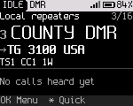

Esta página aún no está traducida; se muestra en inglés.
Introduction
RadioFoundry is free, MIT-licensed multi-mode firmware for inexpensive digital radios: DMR, P25, NXDN and FM. It replaces the radio's stock firmware. One radio-independent core provides the digital voice stacks, the user interface, the codeplug and the host tools. Each radio adds a thin board layer underneath.
This manual describes what RadioFoundry does on every radio. What differs between radios (the keys, power levels, battery, power switch, display, missing hardware and test status) is in the Radio reference. The screenshots are 160 x 120. Other radios show the same screens, laid out for their display.

Reading order
| To | Read |
|---|---|
| Put RadioFoundry on a radio | Installing, then First boot |
| Load channels, zones and contacts | Programming the radio |
| Learn the keys and screens | Keys and navigation, The Home screen |
| Use a feature | The chapters from Channels, zones and the VFO to Battery and power |
| Look up a setting | Settings |
| Come from the stock firmware | The migration chapters |
| Fix a problem | Troubleshooting, FAQ |
The index lists every chapter.
Radios and project status
The Radio reference lists the supported radios, what each one has been checked for, and the radios in progress. Feature matrix shows each feature per radio. Only the radios in the releases are ready for use.
RadioFoundry is early software. Each feature is in one of three groups.
| Group | Meaning |
|---|---|
| Verified on the radio | Tested on a radio, on air against the SDR bench where RF is involved. The Radio reference says what is verified on each radio |
| Built, host-tested | Works against simulated chips in the host tests, or is only partly checked on a radio |
| Not built yet | Shown in the menus, dimmed, with a message when selected: voice prompts, typed text messages, speed dial, editing or deleting a stored contact on the radio |
Some features aren't on every radio. Either the hardware lacks something, or the radio's board code isn't written yet. The Radio reference lists them for each radio.
What RadioFoundry does
- DMR voice: group and private calls, talker alias, basic privacy, positions in calls (ETSI GPS Info).
- DMR data: text messages, call alert, radio check, ARS registration, LRRP location answers.
- DMR emergency: alarm, emergency call with hot mic, alerts when someone else declares an emergency.
- DMR repeater roaming per zone.
- FM: CTCSS and DCS tones, squelch, monitor, 12.5 and 25 kHz bandwidth, VOX, touch tones.
- A VFO for tuning a frequency by hand, in FM or in DMR. Air band AM and FM broadcast receive on radios with the hardware.
- Scan of a zone or of the VFO band, and dual watch on two channels.
- APRS: position, status and messages on FM, positions over DMR, a KISS TNC.
- Hotspot: the radio is an MMDVM modem for MMDVMHost and Pi-Star style hosts, with a single frequency repeater mode (MMDVM SFR).
- USB network mode: the radio is a USB network adapter and routes IP over DMR. On that link it serves a status page, rig control, KISS over TCP, TFTP codeplug access, SNMP and mDNS. It can also act as a control station for dispatch software.
- Programming with the Codeplug Editor in the browser or with qdmr, and a DMR ID database built from RadioID.net.
The AMBE codec
DMR voice needs DVSI's proprietary AMBE+2 vocoder. RadioFoundry never ships it. Each radio runs the codec from its own stock firmware. The installer keeps the codec already in your radio, or takes it from the stock firmware file on your computer and writes it to the radio (Installing). Without the codec the radio works on FM, shows DMR calls and handles DMR data. It plays and sends no DMR voice.
Conventions in this manual
Keys are named by the job they do. Each radio puts these jobs on its own keys. Key roles has the table for every radio.
The names are OK, Back, Up, Down, *, #, 0 to 9, Monitor, Talk target, Power level, Previous zone, Next zone and PTT. On a radio without one of these keys, the menus reach the job.
"Hold" means press and keep the key down for at least 0.6 s. This is the long-press time, adjustable in
Settings. "Press" means a short press. Menu paths are written with >. Settings > Display >
Brightness means open Settings, then Display, then Brightness.
On-screen text is quoted as it appears, for example "Saved to channel".